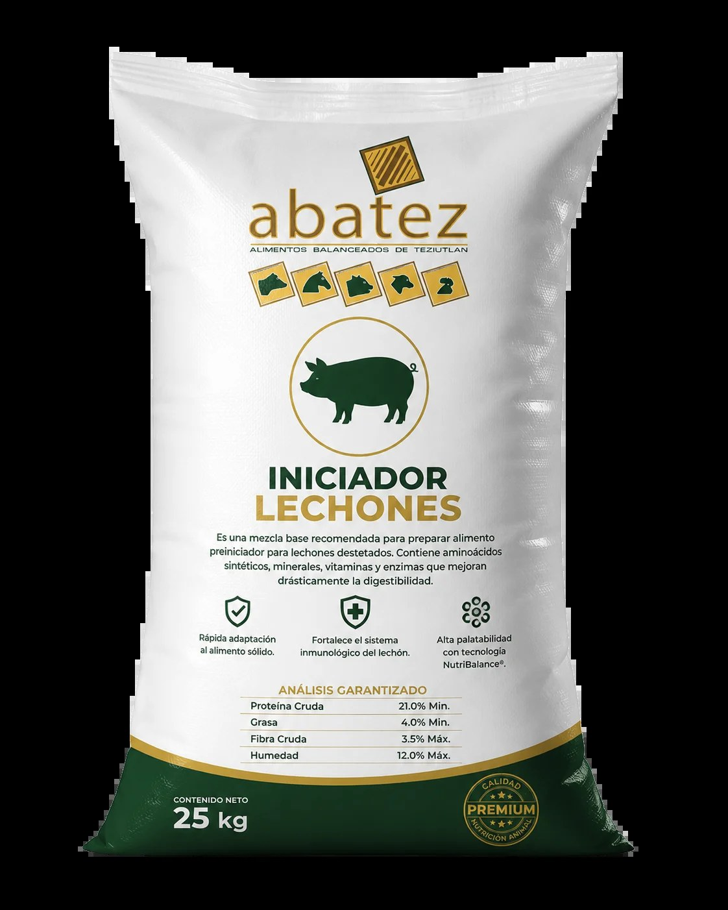
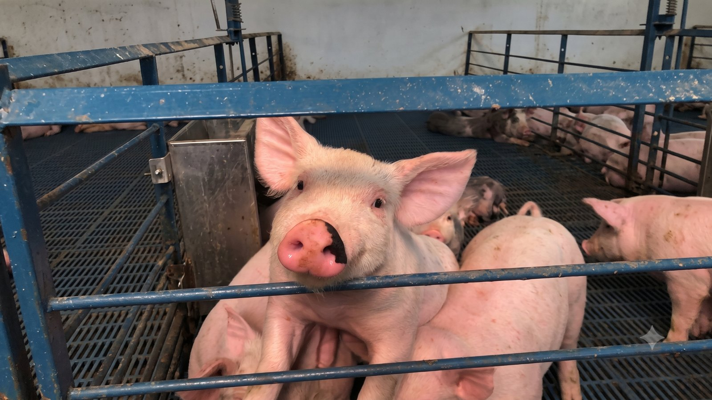

Consulta personalizada
Iniciador para lechones
Para etapa inicial. Consulta recomendación según etapa y condición.
Consulta opciones y recomendaciones según etapa. Nuestro equipo puede confirmar disponibilidad, presentación y uso sugerido.
Cuéntanos la etapa, peso aproximado y objetivo. Te ayudamos a confirmar la mejor opción disponible, presentación y precio.

Para etapa inicial. Consulta recomendación según etapa y condición.

Consulta disponibilidad y recomendación según peso y etapa.

Consultar disponibilidad y recomendación técnica.